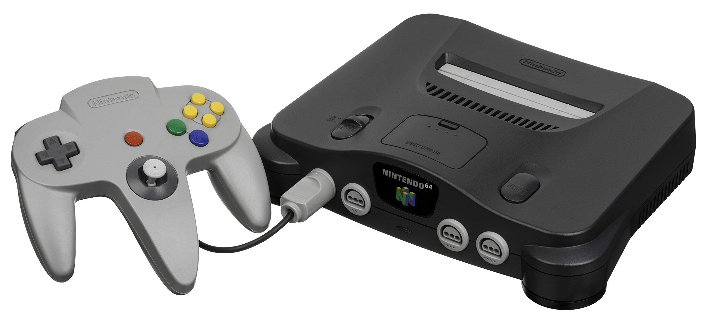

Comenzamos en la fecha 23 de Septiembre de 1889, cuando un artesano de nombre Fusajiro Yamuchi fundo una empresa llamada Nintendo Koppai que el objetivo de era crear naipes Hanafuda es una baraja de cartas que incorporan ilustraciones en vez de numeros, despues segurion con la oferta de crear más cartas y en el año 1959 hicieron una colaboracion con Walt Disney para incorporar sus personajes animados en sus cartas y se vendieron más de 1,5 millones de cartas en el mercado. En 1969 y 1978 hicieron sus primeros jueguetes electronicos y sus primeros videojuegos, que en el comienzo del año 1970 crearon un juguete electronico que era la pistola de Nintendo Beam Gun, que se vendieron más de un millon de unidades, luego siguieron haciendo mñas juguetes debido a la gran propuesta que hicieron con la pistola.En el año 1979 se inaguro la empresa de nintendo of america situada en nueva york con el desarollo de productos arcade, despues crearon el primer vidojuegos de plataforma con el estreno de Donkey Kongdesarrolado por el famoso Miyamoto, que despues de este videjuego ya salio el segundo juego plataformas con el famoso Mario que se convertiria en el icono de Nintendo. En los siguientes años empezaron a salir Metroid, The Legend of Zelda,Punch-Out . En 1988 salio la consola Game Boy con el juego Game & Watch, el famoso tetris que se vendieron 40.000 consolas en su primera exhibicion.
A mediados de 1993 Nintendo y Silicon Graphics anunciaron una alianza estratégica para desarrollar la Nintendo 64 en cuya tecnología también contribuyeron otras empresas como NEC, Toshiba y Sharp. De manera comercial se le consideró como una de las primeras consolas diseñadas con arquitectura de 64 bits. Como parte de un acuerdo con Midway Games, se acordó la adaptación de un par de juegos arcade de Nintendo a dicha consola: Killer Instinct y Cruis'n USA.Si bien se tenía contemplado estrenar la N64 en 1995, el itinerario de producción de los juegos para la consola influyó en su retraso y finalmente se estrenó en junio y septiembre de 1996 en Japón y los Estados Unidos y en marzo de 1997 en Europa. Hasta el cese de su producción en 2002, se vendieron alrededor de 33 millones de consolas en todo el mundo y suele ser catalogado como uno de los sistemas de videojuegos más reconocidos en la historia.103 En total se produjeron 388 juegos, de los cuales algunos han sido distinguidos como «los mejores de todos los tiempos» como Super Mario 64, The Legend of Zelda: Ocarina of Time y GoldenEye.
Comenzó a distribuirse en marzo de 2017. Algunas de sus características principales son el diseño híbrido a manera de consola de sobremesa y portátil; la funcionalidad independiente de sus mandos Joy-Con, que incorporan a su vez su respectivo acelerómetro y giróscopo; y la conexión inalámbrica simultánea de hasta ocho consolas. Para ampliar su catálogo de juegos, la empresa nipona concretó alianzas con varias desarrolladoras terceras e independientes, hasta febrero de 2019 se tenía noción de más de 1800 juegos para esta plataforma. Asimismo, la cantidad de consolas vendidas hasta marzo de 2020 superaba las 55 millones de unidades en todo el mundo.En abril de 2018 comenzó a comercializarse una nueva línea de productos denominada Nintendo Labo consistente en accesorios de cartón que interactúan con la Switch y sus Joy-Con. De acuerdo con información de la compañía, en su primer año en el mercado se habían vendido más de un millón de productos de uno de los tres kits de productos de esta marca.

En marzo de 2016 se estrenó Miitomo la primera aplicación móvil para los sistemas operativos iOS y Android.Desde entonces la empresa ha producido otras aplicaciones similares como Super Mario Run, Fire Emblem Heroes, Animal Crossing: Pocket Camp, Mario Kart Tour y Pokémon Go, este último desarrollado por la estadounidense Niantic Inc., gracias a esta última aplicación en 2016 Nintendo generó ingresos adicionales de 115 millones.
Otros sucesos relevantes acontecidos en 2016 tuvieron que ver con el reemplazo del servicio de fidelización Club Nintendo por My Nintendo y el lanzamiento de NES Classic Edition una versión rediseñada de la NES con novedades como el soporte de la interfaz HDMI y su compatibilidad con el Wiimote para reproducir juegos de Wii y Wii U de la Consola Virtual.Casi un año después, en septiembre de 2017 se lanzó SNES Classic Edition con un funcionamiento similar a su predecesora, pero esta vez centrada en el catálogo de títulos para la SNES.Hasta junio de 2018 se habían comercializado alrededor de seis millones de unidades de ambas consolas en el mundo.
Con motivo del 35° aniversario de lanzamiento de Super Mario Bros, en 2020 se distribuyeron múltiples productos inspirados en la mascota de Nintendo, entre los cuales se encuentran la consola portátil Game & Watch: Super Mario Bros. y los juegos Super Mario 3D All-Stars, Mario Kart Live: Home Circuit y Super Mario 3D World + Bowser's Fury.Cabe agregar que, en abril del mismo año, se inauguró un hotel llamado Marufukuro en el que fuera la sede original de Nintendo en los años 1930.
En abril de 2023 se estrenó Super Mario Bros: La película, una película animada basada en los personajes de Mario y cuyo reparto de voces en inglés incluye a los actores Chris Pratt, Anya Taylor-Joy, Seth Rogen, Jack Black y Charlie Day como Mario, Peach, Donkey Kong, Bowser y Luigi, respectivamente.Este mismo mes, y como parte de la mercadotecnia de lanzamiento del juego The Legend of Zelda: Tears of the Kingdom, empezó a distribuirse un nuevo modelo OLED de la Switch cuyo diseño está inspirado en el universo de Zelda.En julio del mismo año se llevó a cabo la fusión de las filiales de Francia y Benelux con Nintendo of Europe, como parte de una reestructura de la compañía.